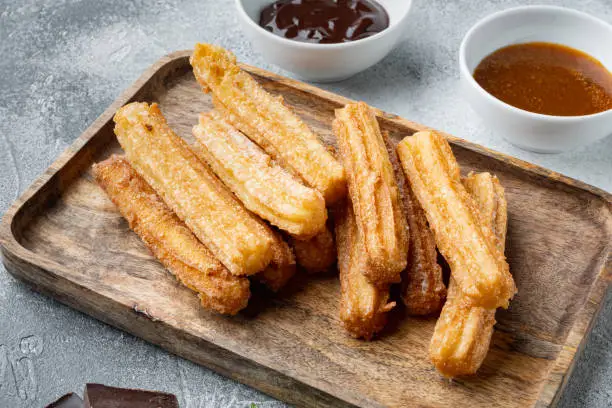

Churros Mexicanos (Authentic Style)

Classic golden, crispy pastries dusted with cinnamon and sugar.
Yields: 12 servings
Prep Time: 10 mins
Cook Time: 20 mins
Ingredients
- 1 cup of water
- 1 tsp vanilla extract
- 1/8 tsp salt
- 2 tbsp butter
- 1 cup of flour sifted, at least 2 times
- 1 large egg beaten
- 2 1/2 cups vegetable or canola oil for frying the churros
- 1 tsp ground cinnamon
- 1 cup of sugar for dusting
Directions
- Make the cinnamon sugar mixture. Mix the sugar and cinnamon and place it in a shallow dish to
coat
the churros, set aside.
- Make the churro dough. Place the water, vanilla extract, salt, and butter in a saucepan at
medium-high heat.
- Once the water mixture comes to a rolling boil, stir in the flour all at once. It is very
important
that the water is boiling to ensure that the dough will render crispy churros.
- Mix the dough vigorously using a wooden spoon or spatula. You have to do this step very quickly.
- Remove the saucepan from the heat, wait about a minute, then add the egg. Keep mixing until the
egg
is completely integrated into the dough (you can use a mixer for this step). In the beginning,
the
dough will want to separate after adding the egg, but keep mixing until the ingredients are well
combined and you have a smooth and soft dough that separates from the bottom of the pot. This
step
will take a few minutes.
- Prep the pastry bag. Place the dough in the pastry bag fitted with a star-shaped tip. Make sure
there aren't any bubbles of air in the dough while you place it inside the bag.
- Pipe 6-inch strips of dough on a prepared tray and then fry them. You can also pipe the strips
of
dough directly into the hot oil, cutting them with your kitchen scissors. The oil will start
bubbling when you add the raw churro, avoid moving the churro at this time.
- Fry the churros for about 2 to 2.5 minutes in hot oil ( 320F) until golden brown and then turn
the
churros with tongs to have an even crispiness and golden color (in total it should take 4-5
minutes
to cook each churro).
- Once they are golden, remove from the heat, place on the paper towel to drain for a few seconds,
and
then roll in the cinnamon sugar mixture.